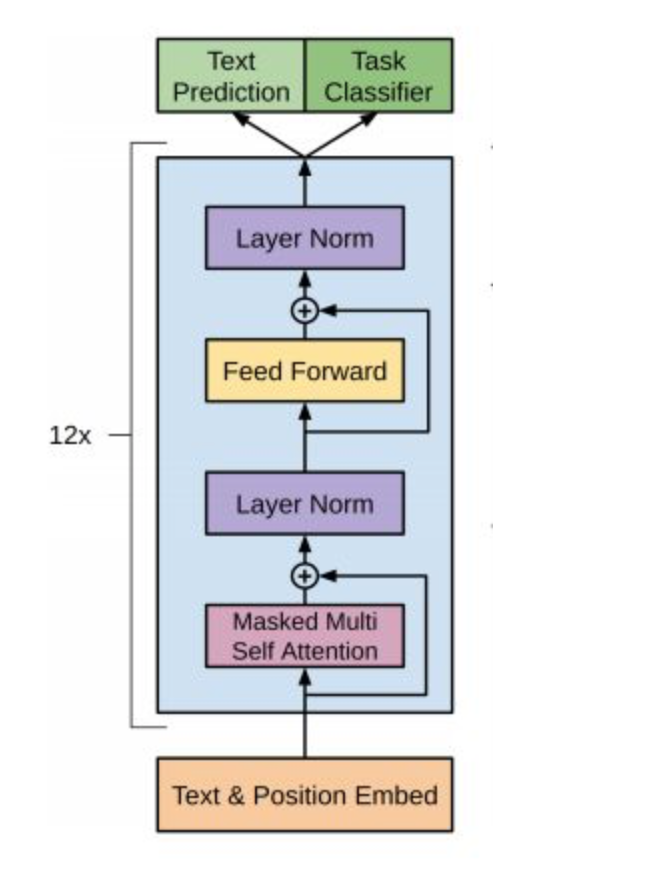

5 GPT模型介绍
学习目标¶
- 了解什么是GPT.
- 掌握GPT的架构.
- 掌握GPT的预训练任务.
1 GPT介绍¶
- GPT是OpenAI公司提出的一种语言预训练模型.
- OpenAI在论文<< Improving Language Understanding by Generative Pre-Training >>中提出GPT模型.
- OpenAI后续又在论文<< Language Models are Unsupervised Multitask Learners >>中提出GPT2模型.
-
GPT和GPT2模型结构差别不大, 但是GPT2采用了更大的数据集进行训练.
-
OpenAI GPT模型是在Google BERT模型之前提出的, 与BERT最大的区别在于GPT采用了传统的语言模型方法进行预训练, 即使用单词的上文来预测单词, 而BERT是采用了双向上下文的信息共同来预测单词.
- 正是因为训练方法上的区别, 使得GPT更擅长处理自然语言生成任务(NLG), 而BERT更擅长处理自然语言理解任务(NLU).
2 GPT的架构¶
- 看三个语言模型的对比架构图, 中间的就是GPT:

从上图可以很清楚的看到GPT采用的是单向Transformer模型, 例如给定一个句子[u1, u2, ..., un], GPT在预测单词ui的时候只会利用[u1, u2, ..., u(i-1)]的信息, 而BERT会同时利用上下文的信息[u1, u2, ..., u(i-1), u(i+1), ..., un].
作为两大模型的直接对比, BERT采用了Transformer的Encoder模块, 而GPT采用了Transformer的Decoder模块. 并且GPT的Decoder Block和经典Transformer Decoder Block还有所不同, 如下图所示:

如上图所示, 经典的Transformer Decoder Block包含3个子层, 分别是Masked Multi-Head Attention层, encoder-decoder attention层, 以及Feed Forward层. 但是在GPT中取消了第二个encoder-decoder attention子层, 只保留Masked Multi-Head Attention层, 和Feed Forward层.
作为单向Transformer Decoder模型, GPT利用句子序列信息预测下一个单词的时候, 要使用Masked Multi-Head Attention对单词的下文进行遮掩(look ahead mask), 来防止未来信息的提前泄露. 例如给定一个句子包含4个单词[A, B, C, D], GPT需要用[A]预测B, 用[A, B]预测C, 用[A, B, C]预测D. 很显然的就是当要预测B时, 需要将[B, C, D]遮掩起来.

具体的遮掩操作是在slef-attention进行softmax之前进行的, 一般的实现是将MASK的位置用一个无穷小的数值-inf来替换, 替换后执行softmax计算得到新的结果矩阵. 这样-inf的位置就变成了0. 如上图所示, 最后的矩阵可以很方便的做到当利用A预测B的时候, 只能看到A的信息; 当利用[A, B]预测C的时候, 只能看到A, B的信息.
注意: 对比于经典的Transformer架构, 解码器模块采用了6个Decoder Block; GPT的架构中采用了12个Decoder Block.

3 GPT训练过程¶
GPT的训练也是典型的两阶段过程:
- 第一阶段: 无监督的预训练语言模型.
- 第二阶段: 有监督的下游任务fine-tunning.
3.1 无监督的预训练语言模型¶
给定句子U = [u1, u2, ..., un], GPT训练语言模型时的目标是最大化下面的似然函数: $$ L_1(U)=\sum_i\log P(u_i|u_{i-k},\cdots,u_{i-1};\Theta) $$ 有上述公式可知, GPT是一个单向语言模型, 假设输入张量用h0表示, 则计算公式如下: $$ h_0 = UW_e + W_p $$ 其中Wp是单词的位置编码, We是单词本身的word embedding. Wp的形状是[max_seq_len, embedding_dim], We的形状是[vocab_size, embedding_dim].
得到输入张量h0后, 要将h0传入GPT的Decoder Block中, 依次得到ht: $$ h_t = transformer\_block(h_{l-1})\;\;\;\;l\in[1,t] $$ 最后通过得到的ht来预测下一个单词: $$ P(u)=softmax(h_tW_e^T) $$
3.2 有监督的下游任务fine-tunning¶
GPT经过预训练后, 会针对具体的下游任务对模型进行微调. 微调采用的是有监督学习, 训练样本包括单词序列[x1, x2, ..., xn]和label y. GPT微调的目标任务是根据单词序列[x1, x2, ..., xn]预测标签y.
其中W_y表示预测输出的矩阵参数, 微调任务的目标是最大化下面的函数:
综合两个阶段的目标任务函数, 可知GPT的最终优化函数为:
4 小结¶
-
学习了什么是GPT.
- GPT是OpenAI公司提出的一种预训练语言模型.
- 本质上来说, GPT是一个单向语言模型.
-
学习了GPT的架构.
- GPT采用了Transformer架构中的解码器模块.
- GPT在使用解码器模块时做了一定的改造, 将传统的3层Decoder Block变成了2层Block, 删除了encoder-decoder attention子层, 只保留Masked Multi-Head Attention子层和Feed Forward子层.
- GPT的解码器总共是由12个改造后的Decoder Block组成的.
-
学习了GPT的预训练任务.
- 第一阶段: 无监督的预训练语言模型. 只利用单词前面的信息来预测当前单词.
- 第二阶段: 有监督的下游任务fine-tunning.